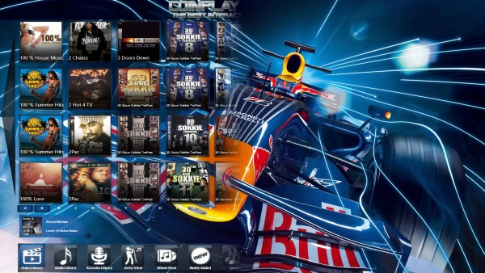

Something a little bit different
Whether you have a retro theme or not, guests will always flock to
the digital jukebox and take control of sing choices with all the
music they will ever need at their fingertips. It’s a great way to
direct the attention of your guests and something to make their
night a little bit extra special. The jukebox has enjoyed prized
positioning at popular nightlife locations for decades. Music is a
crucial element of any venue and patrons enjoy the ability to pay to
play specific songs when they want to hear them. However, disc and
record based machines limit the available music, both for standard
play as well as selection for a customer base now used to unfettered
digital access to a vast music library.
Extremely high quality
When you use a Playgate digital jukebox, you will know that you are
getting digital jukeboxes of the very highest quality. Each one of
our jukeboxes uses the most advanced technology and software to
ensure that you will get the smoothest and most reliable performance
possible for your venue.
Almost any track you want
Our jukeboxes come with a vast supply of different tracks. You are
guaranteed that your guests will love having the chance to be the
DJ, using the touch screen feature to select all their favourite
hits, to compile playlists and be entertained by our high quality
music videos. If you’re worried about awkward pauses in the music,
you don’t have to. Our advanced software we use in our jukeboxes
cross-fade tracks into each other, meaning you don’t ever need to
worry about being left red-faced during the awkward moments when the
music stops.
Control What Your Jukebox Play
Venue operators have full control over what genres and songs are
played on their machines. Restrictions can even be applied to music
categories available to patrons since it would ruin the mood at a
country club to suddenly have techno playing.
Routine Updates
Libraries available on Playgate digital jukeboxes are routinely
updated. Playgate offers a huge variety of audio, video and karaoke
tracks on our jukeboxes depending on the model. Because of the
regular updates, the libraries are continuously growing and
changing.
Additional Features
Playgate digital jukeboxes offer additional features for the
adventurous venue operator, like the ability to change the look or
theme of the jukebox, play announcements, etc.. Added options such
as Karaoke have proven to be big hits in some locations.
A cost-effective alternative
As everyone knows, Hiring a DJ can be expensive (and don’t get us
started on a band), between the cost per hour and other equipment
that you may have to pay, the prices just quickly add up. But now,
the digital Jukebox is a much more cost-friendly alternative. Unlike
a band or DJ, you won’t be charged by the hour with a digital
Jukebox, but instead you’ll earn an income from the music played at
your venue. The Playgate Digital Jukebox is by far your best
cost-effective alternative adding value to your business.

Conclusion
In conclusion, there are numerous advantages to a digital jukebox.
Not only is it a great way to blast a whole range of songs, and get
people onto the dance floor, but it also gives your guests the
freedom to pick which ones they want, to make sure they are happy
all night long. On top of that, it’s a much more cost effective
music solution, and there’s less hassle involved. When you choose
one of our digital jukeboxes, we come and set it up for you, no
stress, no fussing and no headaches. No matter what type of venue
you operate, music is likely to be a big part of the mix. Playgate
digital jukeboxes allow for smaller footprint with a wider variety
of music than traditional music solutions. To find out more about
digital jukeboxes and whether they are the right fit for your
location, contact Playgate Digital Jukeboxes today!